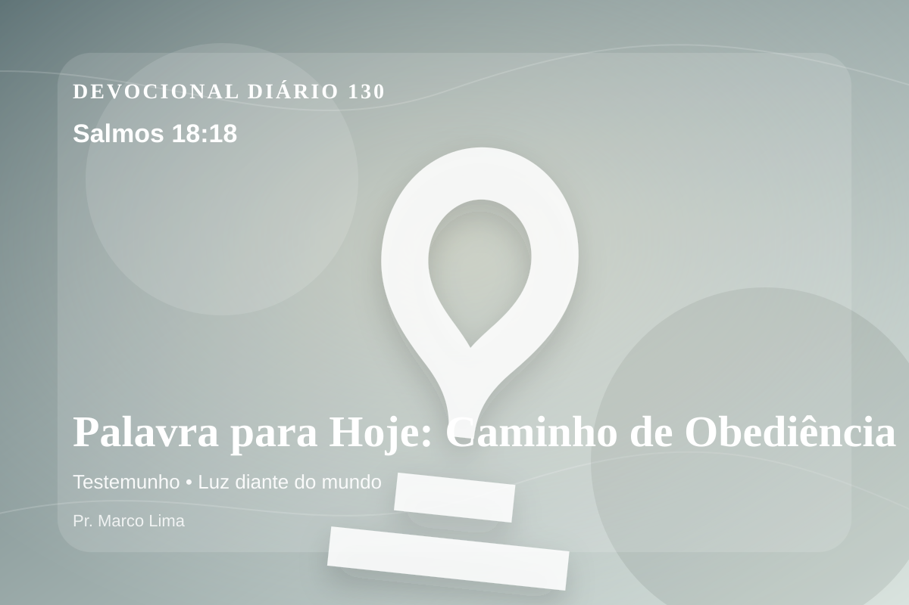

Palavra para Hoje: Caminho de Obediência (Salmos 18:18)
Eles me confrontaram no dia de minha calamidade; mas o SENHOR ficou junto de mim.
Pensamento
Ao voltar a este texto, perceba um detalhe prático: a fé também amadurece quando a resposta demora. Há dias em que precisamos de uma resposta imediata; há outros em que Deus nos dá algo melhor: uma verdade para sustentar a caminhada. Salmos 18:18 faz isso.
Salmos 18:18 chama o coração a ouvir Deus com reverência e responder com fé prática. A Palavra não foi dada para enfeitar pensamentos religiosos, mas para conduzir pessoas reais ao Senhor.
O tema de testemunho precisa ser recebido com simplicidade e seriedade. Receba esta Palavra como convite pastoral: Deus está tratando não apenas circunstâncias, mas o coração. Este tema aponta para a maneira como Deus forma o coração do Seu povo por meio da Palavra. A aplicação correta não nasce de frases soltas, mas de uma leitura reverente, contextual e obediente do texto bíblico.
O Senhor conhece aquilo que ninguém vê. Por isso, responda com sinceridade: que desejo, atitude ou decisão precisa se render ao governo de Jesus hoje?
Arrependimento não é apenas sentir peso na consciência; é voltar-se para Deus, abandonar o caminho que entristece o Senhor e confiar que a graça de Cristo é suficiente para perdoar e transformar.
Este é o evangelho que sustenta toda aplicação: Jesus Cristo morreu pelos pecadores, ressuscitou em vitória e chama cada pessoa a responder com fé, arrependimento e uma vida rendida ao Seu senhorio.
Em Jesus, o convite de Deus é claro: venha como está, mas não permaneça como está. A graça que perdoa também transforma.
Faça deste dia um altar simples: menos justificativas, mais rendição; menos pressa, mais escuta; menos controle, mais confiança no Senhor.
Para Praticar Hoje
- Leia Salmos 18:18 lentamente e destaque uma palavra ou expressão central do texto.
- Confesse a Deus um pecado, resistência ou frieza espiritual que esta Palavra revelou.
- Declare sua fé em Jesus Cristo e pratique hoje uma atitude concreta de arrependimento e obediência.
Oração
Senhor, onde há vergonha do evangelho, envergonha-me para Ti. Salmos 18:18 me ensina a ser testemunha com ousadia, não apenas com palavras, mas com uma vida que reflete o Teu amor. Que isso se torne vida em mim.
{kind=link}